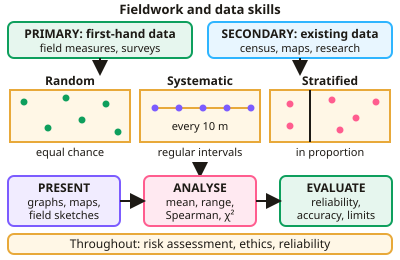

A-level Geography Year 12 · Topic 4
Geographical skills and fieldwork
Geographical skills and fieldwork are the methods geographers use to collect, analyse and present evidence.
We will plan fieldwork enquiries, collect primary data, and use maps, graphs and G I S.
Then we use descriptive statistics and statistical tests, and evaluate our fieldwork and its conclusions.
- 8 subtopics
- 581 questions
- Free: 4.1 notes and 10 questions
In this topic
- 4.1Fieldwork and data skillsFree below · 55 questions
- 4.2The fieldwork enquiry process: questions, hypotheses, planning, risk assessment and ethicsOpen in Full Marks · 81 questions
- 4.3Primary data collection and sampling: physical (coastal) and human fieldwork techniquesOpen in Full Marks · 73 questions
- 4.4Cartographic and graphical skills: OS maps, choropleths, isolines, scatter graphs, kite and radial diagramsOpen in Full Marks · 72 questions
- 4.5Descriptive statistics: averages, range, interquartile range and standard deviationOpen in Full Marks · 70 questions
- 4.6Statistical tests: Spearman's rank, chi-squared, Mann-Whitney U and Student's t-testOpen in Full Marks · 76 questions
- 4.7GIS, ICT, remote sensing and qualitative data analysisOpen in Full Marks · 75 questions
- 4.8Evaluating fieldwork: reliability, validity, limitations and drawing conclusionsOpen in Full Marks · 79 questions
4.1 · Free notes
Fieldwork and data skills

Key points
- Primary data is collected first-hand (field measurements, questionnaires, surveys); secondary data comes from existing sources (census, maps, published research).
- Sampling methods: random (every point has an equal chance), systematic (at regular intervals) and stratified (proportional to subgroups).
- Quantitative data can be presented using graphs, choropleth maps, isoline maps, proportional symbols and flow lines; qualitative data uses photographs, transcripts and field sketches.
- Statistical techniques include measures of central tendency and spread, and tests such as Spearman's rank correlation coefficient and chi-squared.
- Fieldwork requires consideration of risk assessment, ethics, reliability, accuracy and the limitations of the data collected.
In more detail
- Worked stratified sampling: split a beach into zones — foreshore, backshore and dunes — and sample each one.
- Data types: quantitative (numbers) or qualitative (descriptions), and primary (collected yourself) or secondary (collected by others).
- Worked choice of method: pebble size along a spit → measured with callipers at systematic intervals.
- Worked reliability: repeat each measurement three times and use the average.
Practice
Fieldwork and data skills: 10 questions
Pick an answer to check it, or open the answer for the explanation.
1. What is primary data?
- Data from the census
- Data collected first-hand by the researcher
- Published research
- Old maps
Show answer
B: Data collected first-hand by the researcher. Secondary data comes from existing sources.
2. What is systematic sampling?
- Sampling at random points
- Sampling at regular intervals
- Sampling only the easiest sites
- Sampling proportional to subgroups
Show answer
B: Sampling at regular intervals. For example, every 10 metres along a transect.
3. Which map shows density using shading?
- Isoline map
- Choropleth map
- Flow line map
- Proportional symbol map
Show answer
B: Choropleth map. Darker shading usually indicates higher values.
4. Which statistical test measures the strength of a relationship between two ranked variables?
- Chi-squared
- Spearman's rank correlation coefficient
- Standard deviation
- Mean
Show answer
B: Spearman's rank correlation coefficient. Values range from −1 to +1.
5. Why is a risk assessment needed before fieldwork?
- To improve data accuracy
- To identify hazards and plan how to reduce them
- To choose a sampling method
- To analyse results
Show answer
B: To identify hazards and plan how to reduce them. Safety planning is an essential part of fieldwork design.
6. Which sampling method involves selecting points at a fixed interval, such as every 10 m along a transect?
- Random sampling
- Systematic sampling
- Stratified sampling
- Opportunity sampling
Show answer
B: Systematic sampling. This gives an even spread of sample points.
7. A student combines her own street questionnaire with published census data on age structure. Using both primary and secondary sources to cross-check findings is called:
- Stratification
- Triangulation
- Interpolation
- Randomisation
Show answer
B: Triangulation. Triangulation uses more than one data source or method to check findings, which makes conclusions more reliable and valid. Here primary questionnaire data are cross-checked against secondary census data.
8. Which of the following is an example of qualitative data collected during fieldwork?
- Wave frequency per minute
- Pedestrian count per 5 minutes
- Mean pebble length in mm
- An annotated field sketch of a cliff face
Show answer
D: An annotated field sketch of a cliff face. Field sketches, photographs and interview transcripts are qualitative because they describe features rather than giving numerical measurements. The other three options are quantitative.
9. A chi-squared test would be most suitable for testing whether:
- The mean of a sample exceeds its median
- Data points lie close to a straight line
- Observed frequencies differ from those expected by chance
- Two ranked variables are correlated
Show answer
C: Observed frequencies differ from those expected by chance. Chi-squared compares observed frequencies in categories (e.g. land-use types) with expected frequencies. Spearman's rank is used for correlation between ranked variables.
10. Students measure 8 pebbles per site. Which change would most improve the reliability of their results?
- Measure only the largest pebbles
- Increase to about 30 pebbles per site
- Estimate sizes by eye
- Measure only at high tide
Show answer
B: Increase to about 30 pebbles per site. A larger sample reduces the effect of anomalies, so repeat measurements give more consistent means. Selecting only large pebbles creates bias, and estimating by eye reduces accuracy.
Keep going in Full Marks
Full Marks has 55 questions on Fieldwork and data skills (45 more than here), set out in practice levels. You also get notes and 3D models for all 8 subtopics of Geographical skills and fieldwork, plus games, timed exams and past papers.
On your exam board
- AQATopic 4: Geographical skills and fieldwork
- OCR ATopic 4: Geographical skills
- EdexcelTopic S: Geographical skills and fieldwork
Not in the Cambridge specification.